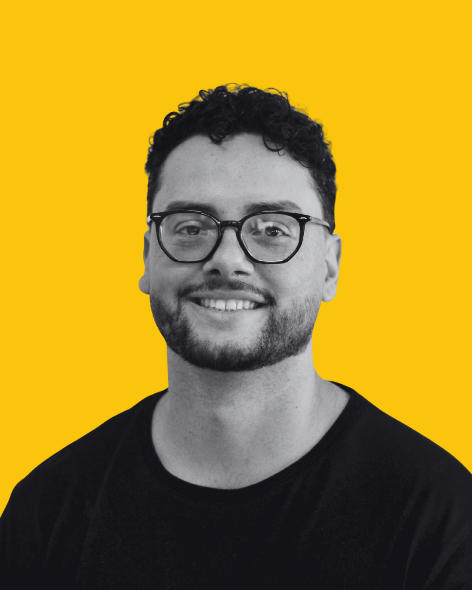
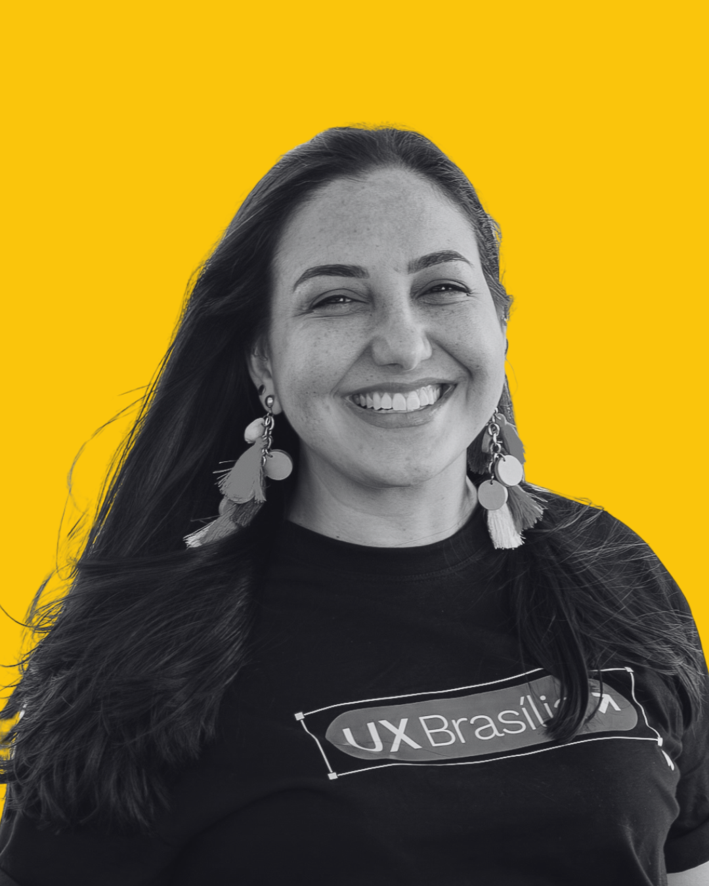
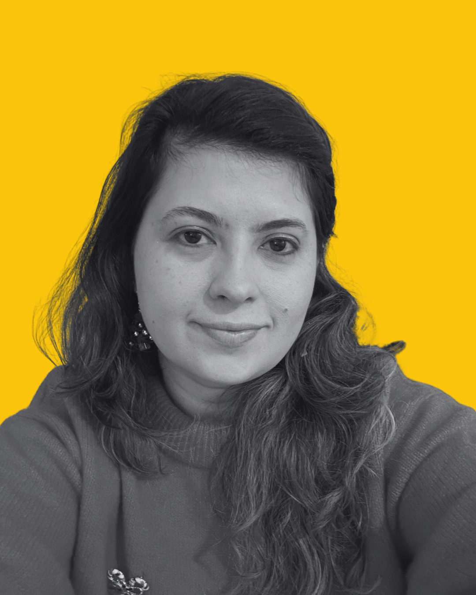
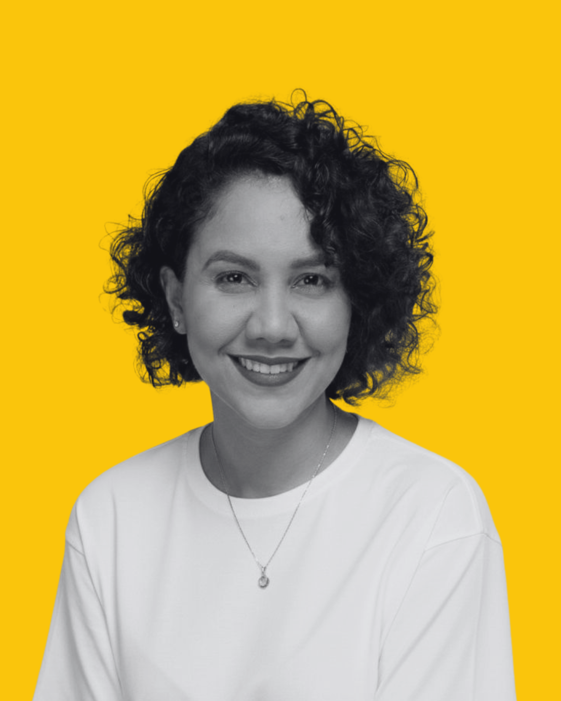
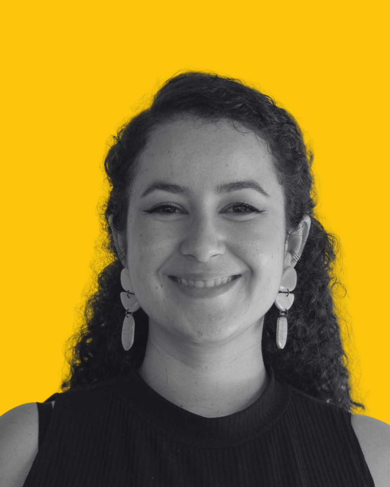

Carlos Guilherme
Product Designer Sênior
Especialista em Mentoria de Práticas de UX na Fóton
Ver LinkedinPrograma de mentoria gratuito para impulsionar sua carreira em UX/UI por e para a comunidade UX Brasília.
O Decola UXBrasília é um programa de mentoria 100% gratuito, com duração de
2 meses, que conecta participantes a mentores parceiros da comunidade.
Os participantes terão acesso à agenda dos mentores durante todo o período do programa.
Sugerimos dois encontros com intervalo de 15 a 20 dias,
mas mentor e participante podem acordar encontros adicionais, se necessário.
Cadastre-se para participar do programa
E garanta o acesso às agendas dos mentores.
3-4 encontros com intervalo de 15 a 20 dias.
Possibilidade de encontros adicionais acordados entre mentor e participante.

Product Designer Sênior
Especialista em Mentoria de Práticas de UX na Fóton
Ver LinkedinDesigner de UI Sênior
Atua com criação de interfaces, estratégia e métricas na Fóton.
Ver Linkedin
Product Designer Lead
Product Designer Lead na Zup com foco em estratégia e negócios conectados a experiência do usuário.
Ver Linkedin
Service Designer
Designer e pesquisadora com background acadêmico e de mercado, atua como Designer de Serviços.
Ver LinkedinSenior Product Designer
Atua com o produto de cartões na criação de interface web e mobile e estratégia no Asaas.
Ver Linkedin
Founder & Design Strategist na lio studio.ai
Atuação como AI Product Designer, unindoUX Research à especialização em Generative AI.
Ver Linkedin
UX Designer Sênior
Com mais de 9 anos de experiência. Formada em Design Gráfico e Design Industrial pela UNB, intercâmbio acadêmico no RIT (EUA) e certificações internacionais em UX (UX-PM Level 3, DesignOps, Facilitação).
Ver LinkedinProduct Designer Sênior
Com 9 anos de atuação em Product Design e foco em entregar soluções centradas no usuário utilizando metodologias ágeis. Domino o ciclo completo de design: da pesquisa e definição de personas à criação de jornadas, protótipos funcionais, coleta e análise de métricas.
Ver LinkedinDesign Lead
Design Lead no Asaas com experiência em UX e Product Design, atuando na criação e evolução de produtos digitais complexos, especialmente no setor financeiro.
Ver LinkedinDesigner conversacional
UX Writer, Dev e Curadora IAs Conversacionais | Formada em ADS | Voluntária | Casada, mãe de pet, aquariana raiz, maluca por shows, comida e Coca Cola.
Ver LinkedinParticipe gratuitamente do Decola UXBrasília e conecte-se com mentores experientes para acelerar sua evolução profissional em apenas 1 mês.